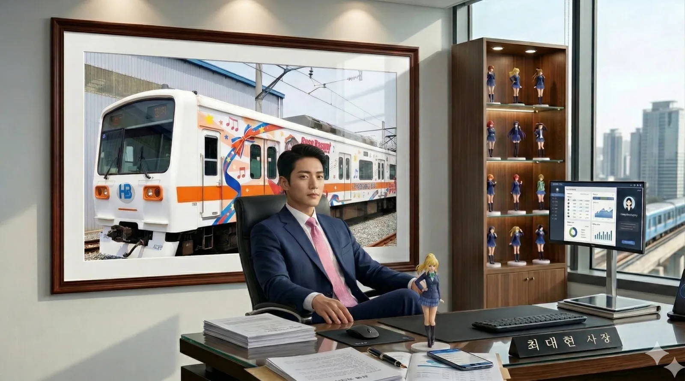
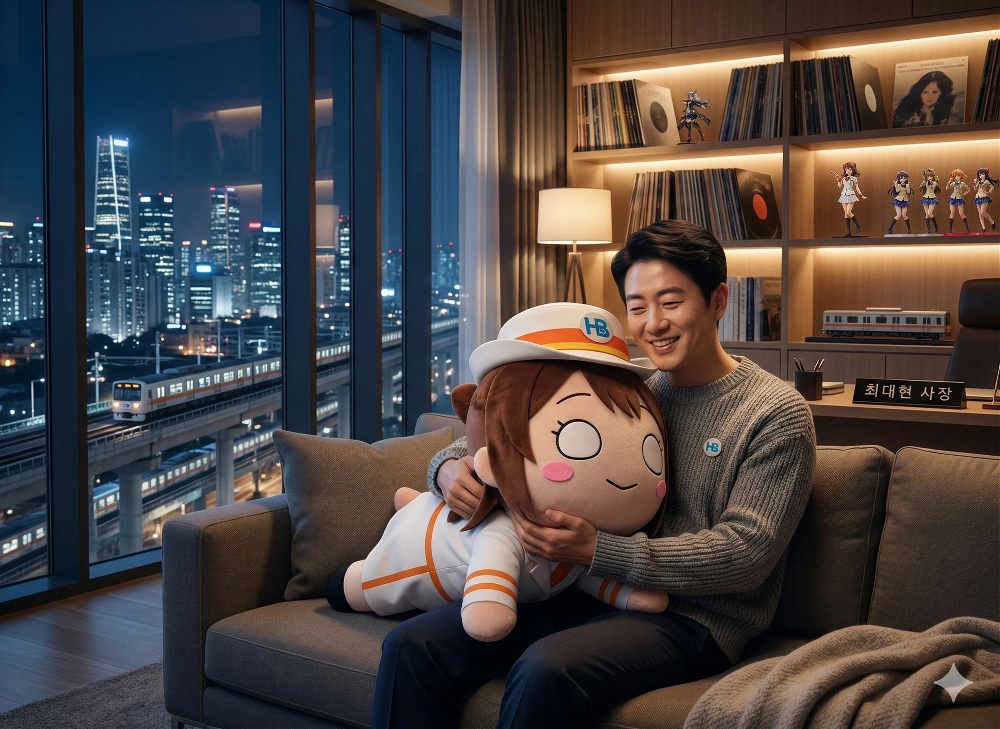

| 이름 | 최대현 (Choi Daehyun) 崔大賢 |
|---|---|
| 출생 | 1978년 5월 12일 (만 48세) 효빈광역시 북구 고송동 |
| 국적 | 대한민국 |
| 학력 | 효빈종합고등학교 (졸업) 효빈대학교 (철도운영학 / 학사) 효빈대학교 대학원 (문화콘텐츠융합 / 석사) 효빈대학교 대학원 (철도경영학 / 박사) |
| 현직 | 효빈광역시 경제부시장 (2026.07 ~ ) |
| 주요 경력 | 효빈광역시청 철도과 주무관 효빈도시공사 철도기획팀 사원 효빈교통공사 전략기획실장 효빈대학교 철도운영학과 교수 효빈교통공사 제3대 사장 |
| 별명 | 효빈의 제갈량 오다구의 후계자 HAF 사령관 돈 버는 덕후, 양다리 P 영업이익 1조의 사나이 |
| MBTI | INTJ |
최대현은 대한민국의 공무원 출신 기업인이자 철도 행정가로, 제3대 효빈교통공사 사장을 역임했으며 현재 효빈광역시 경제부시장이다.
초기에는 효빈광역시청의 말단 공무원(철도직 9급)으로 시작했으나, 효빈 서브컬처의 아버지라 불리는 오다구(당시 철도과장)의 눈에 띄어 그의 수제자가 되었다. 스승이 닦아놓은 레일루미네 캐릭터 사업의 낭만적인 기틀 위에 무자비한 자본주의적 비즈니스 모델(글로벌 라이선스, 대규모 미디어 믹스, 악랄한 게임 가챠 도입)과 과감한 확장을 들이부어, 만성 적자이던 철도 회사를 매출액 3조 681억 원, 영업이익 1조 282억 원(2024년 기준)을 찍어버리는 '글로벌 IP 제국'으로 탈바꿈시킨 입지전적인 인물이다. 자본금 22조, 직원 수 13,937명에 달하는 거대 공기업을 서브컬처 기획사처럼 굴렸던 미친 통솔력을 자랑한다.
"덕질은 가장 정직한 소비다"라는 지론 아래, 공기업의 방만함과 엄숙주의를 완벽하게 파괴하고 효빈권 전철 캐릭터 사업을 주력 수익 모델로 장착시켰다. 이로 인해 대중과 언론으로부터 '효빈굿즈공사 사장'이라는 멸칭이자 영광스러운 타이틀을 얻었다. 또한, 형제 기업인 효빈도시공사의 김도빈 사장에게 '1조 원의 벽'이라는 열등감을 심어주어 아파트 가챠 분양이라는 기상천외한 사태를 유발하게 만든 영원한 맞수이기도 하다. 박효빈 시장(1996년생)의 전폭적인 신임을 받아, 2026년 7월 공기업 기관장으로서의 압도적인 성과를 인정받아 효빈광역시 경제부시장으로 전격 영전하였다.
1978년 효빈시 북구 고송동에서 태어났다. 어린 시절, 집 앞을 지나가던 2호선의 개통(1989년)을 목격하며 철도에 대한 막연한 동경을 품었다. 학창 시절에는 90년대 중반 일본 대중문화 개방과 함께 유입된 신세기 에반게리온에 충격을 받고 소위 '2세대 오타쿠'로 각성했다. 당시 그는 "인류보완계획보다 효빈철도보완계획이 더 시급하다"는 뻘생각을 하며 학창 시절을 보냈다고 한다. 훗날 그가 1조 원대 흑자 제국을 세우게 된 중2병의 매우 긍정적이고 생산적인 발현이었다.
1997년 효빈대학교 철도운영학과에 입학한 그는 졸업 후 일반 기업이 아닌 효빈광역시청 지방공무원(철도직 9급 주무관)으로 임용되어 공직 생활을 시작했다. 공기업 사장이 되기 이전, 서류 작업과 규정의 허점을 완벽하게 꿰뚫는 뼈대 굵은 행정 실무자였던 셈이다. 당시 그의 직속상관인 철도과장이 바로 운명의 스승 오다구였다.
어느 날 부서 회식 자리에서 오다구 과장이 카드캡터 사쿠라의 '절대적인 귀여움'이 세상을 구한다는 미학을 열변할 때, 말단 주무관이었던 최대현은 조용히 손을 들고 반론을 제기했다.
"과장님, 단순한 모에를 넘어 사쿠라 대전의 '제국화격단'처럼, 평소엔 엔터테인먼트(가극단)로 막대한 수익과 문화를 창출하고 비상시엔 시민의 발이 되어 지키는(화격단) 이중 경영 모델이야말로 효빈시 철도 행정의 미래가 아닐까요?"
이 발언에 오다구는 무릎을 탁 치며 "자네, 정말 훌륭한 P(프로듀서)의 자질이 있어! 합격!"이라며 그를 즉각 직속 라인으로 편입시켰고, 이후 둘은 시청 지하 기록실에서 제국화격단의 운영 방식과 철도 경영학을 접목시키는 은밀한 토론을 벌였다고 한다.
오다구가 효빈도시공사 사장으로 영전하면서, 최대현 역시 안정적인 공무원직을 미련 없이 던지고 효빈도시공사 철도기획팀 사원으로 이직했다. 하지만 2006년, '오타쿠 학살자' 윤대환이 3표 차이로 시장에 당선되면서 효빈시에 암흑기가 도래했다. 오다구 사장은 적폐 세력에 의해 강제 파면되었고, 신입 사원 최대현은 창고에 처박혀 폐기될 위기에 놓인 한바다와 고나미 굿즈를 보며 피눈물을 흘렸다.
그는 겉으로는 윤대환의 '돈불라' 정책에 순응하는 척했지만, 퇴근 후에는 오다구 전 사장의 집 지하 벙커로 출근하여 보관 중인 캐릭터들의 데이터를 지키고, 훗날을 도모하며 해외 IP 라이선스 계약을 위한 법률 및 저작권 공부를 독학하는 철저한 이중생활을 했다. 이때 그는 충격적인 괴작 제노그라시아를 보며 "어떤 끔찍한 혼종(시장)이 나와도 멘탈을 부여잡고 버텨내는 법"을 길렀다고 회고했다.
2016년, 6호선을 경전철로 축소하려던 윤대환 잔재 세력(당시 도시공사 간부들)에 항명하여 김성민 시장의 주도로 효빈교통공사가 완전히 분사(독립)되었다. 초대 박철군 사장과 2대 정민재 사장의 묵인과 비호 아래 최대현은 마침내 양지로 나왔다. 전략기획실장으로 초고속 승진한 그는 과거 벙커에서 독학했던 라이선스 지식을 총동원하여 HAF의 기틀을 닦고, 굿즈 대량 생산 라인 구축과 미디어 믹스의 기반을 마련했다.
이후 2022년, 기초생활수급자 출신이자 뼛속 깊은 '성덕(성공한 덕후)'인 박효빈 시장이 취임하면서 "오다구의 낭만과 행정가의 치밀함을 모두 갖춘 완벽한 후계자"로 지목받아 제3대 효빈교통공사 사장으로 전격 취임했다. 9급 공무원으로 시작해 거대 공기업 사장까지 오른 신화적인 인물이 된 것이다.
효빈교통공사를 이끌면서 캐릭터 IP 비즈니스와 가챠 시스템 도입 등으로 영업이익 1조 클럽을 달성한 경이적인 성과를 인정받아, 2026년 7월 자로 효빈광역시 시정의 2인자 자리인 경제부시장에 파격적으로 발탁되었다. 공기업 사장 시절 보여준 무자비한 자본주의적 수완이 박효빈 시정의 경제 정책을 어떻게 광기로 이끌어갈지 세간의 관심이 집중되고 있다.
"오타쿠를 가르치려 들지 마라. 그들이 원하는 것을 최고 퀄리티로 제공하면, 지갑은 알아서 열린다."
그의 경영 철학은 스승 오다구의 '순수한 감성'에 '무자비한 자본주의적 수익성'을 결합한 것이다. 그는 공사의 제1 목표가 "안전"이라면, 제2 목표는 "세계구급 IP 사업을 통한 무한한 재무 자립"이라고 못 박았다.
철저한 동호인(덕후)의 시각에서 라인업을 기획하되, 글로벌 제조사(굿스마일 컴퍼니, SEGA 등)와의 파트너십을 통해 단가를 후려치고 대량 생산(Mass Production) 체제를 구축하여 이윤을 극대화하는 그의 방식을 언론과 시민들은 'Neo-Moe Strategy (신 모에 전략)'이라 부른다. 공무원 짬바에서 나오는 완벽한 서류 작업(지방공기업법 위반을 교묘하게 빗겨 나가는 합법적 덕질 기획)은 시청 감사실에서도 도장을 찍어줄 수밖에 없게 만든다.
최대현의 진정한 천재성은 '효빈굿즈공사'라는 멸칭이 아깝지 않을 만큼의 경이로운 수익 창출 능력에 있다. 2024년 결산 기준, 효빈교통공사는 운임 수익 외에도 캐릭터 라이선스, 자체 굿즈 대량 판매, 레일루미네 미디어 믹스 전개 수익 등을 미친 듯이 쓸어 담으며 매출액 3조 681억 원, 영업이익 1조 282억 원이라는 재벌 그룹 계열사 뺨치는 실적을 기록했다.
단순한 지역 서브컬처 축제였던 HAF(효빈 애니메이션 페스티벌)를 도시 전체를 아우르는 '도심형 성지순례 축제'로 확장시켰다. 2025년 'The Grand Slam' 슬로건을 내걸고 7일 체제 11개 ZONE으로 도시를 분할 통치하며, 교통 패스(HAF PASS)와 연계한 스탬프 랠리로 4만 5천 명이 넘는 관광객의 동선을 통제했다.
특히 HAF 기간 동안 '아이마스 카페'와 '럽라 카페'를 서로 마주 보는 건물에 입점시키는 악마 같은 상술로 양대 팬덤의 대통합과 동시에 지갑을 완벽하게 털어버렸다. 이 밖에도 사능동(야마부키 사아야 성지), 이자공원역(사쿠라우치 리코 성지), 당가동(탕쿠쿠 디저트 성지) 등 지역 상권과 캐릭터 설정을 기적적으로 연동시켜, 박효빈 시장이 기획한 블루버드 정책(청소년 문화복지 지원)과 맞물려 HAF 3일간 벌어들인 수익이 공사 1년 치 영업이익과 맞먹는 경제 파급 효과를 일으켰다.
단순히 굿즈를 파는 것을 넘어 캐릭터와 성우를 동기화시킨 라이브 이벤트 비즈니스를 극대화했다.
스튜디오 효빈과 일본 선라이즈(Sunrise)를 협력시켜 2025년 8월 완전 신작 《극장판 레일루미네 - 기적의 스탬프 랠리 -》를 개봉시켰다. 정전된 도시에서 멤버들이 스탬프 랠리 앱으로 전력을 복구한다는 재난 어드벤처 장르로, 어둠 속에서 카메라 플래시를 터뜨려 폭탄을 찾은 박라미의 맹활약이 돋보였다.
개봉 직후, 윤대환 전 시장이 "테러 집단 수장이 나를 악의적으로 묘사했다"며 상영금지 가처분 소송을 걸어오자, 최대현은 즉각 공사 법무팀을 동원해 무자비하게 맞고소하여 기각을 이끌어냈다. 이 소송 사실이 언론을 타며 예매율이 오히려 1.1배 급상승하자, 최대현은 이를 대놓고 조롱하기 위해 "승전 기념 1.1배 가격 할인(약 10% 세일) 축제"를 열어 극장판 굿즈를 싹쓸이 판매하는 광기 어린 노이즈 마케팅을 완성했다.
1st Live 현장에서 리듬 어드벤처 모바일 게임 《레일루미네: 스마일 페스티벌》 출시를 예고했다. 이는 악랄한 가챠(뽑기) 시스템을 공기업 수익 모델에 합법적으로 도입하여 전국 오타쿠들의 지갑을 강도질하겠다는 선전포고였다. 이와 함께 숏폼 애니 《쁘띠 레일루미네》 방영 확정, TV 애니메이션 2기 제작 확정 등, 하나의 IP를 여러 갈래로 쪼개어 수익을 극대화하는 OSMU(One Source Multi Use)의 끝판왕을 보여주었다.
윤대환 전 시장, 불법 성매매 장부에 이름이 적힌 아들 윤재훈, 그리고 불법 키스방 침대에서 체포된 극우 활동가 이차야 등 적폐 4인방이 일본 성우들의 SNS에 악플을 다는 만행을 저질렀다. 이에 전노아 성우(마에다 카오리)의 소속사인 일본 초대형 기획사 아뮤즈(Amuse)가 국제 소송을 걸어버리는 대참사가 발생했다.
궁지에 몰린 윤재훈 일당은 2025년 내한 행사장에 난입해 테러를 시도했으나, 새벽부터 대기하던 5천 명의 레일루미네 하드코어 팬덤과 사능동 상인회에게 사방에서 포위당해 밟혀 죽을 위기에 처했다. 결국 이들은 경찰 기동대 버스 밑으로 기어들어가 "경찰 아저씨 제발 살려주세요! 유치장으로 보내주세요!!"라며 오열하며 구속되는 처참하고도 전 지구적인 병신 인증을 완료했다.
1st Live 당시, 박효빈 시장이 사비로 스탠딩석을 예매해 앙코르곡에서 안경을 벗고 펑펑 우는 장면이 전광판에 잡혔다. 이후 박 시장은 격무에 시달린 효빈교통공사 및 코레일 직원들에게 노사협의회를 거쳐 합법적인 특별 휴가와 단가 몇천 원짜리 굿즈를 격려품으로 지급했다. (사실 최대현과 정시원 본부장 본인들이 굿즈를 소장하고 싶어 사내 복지 규정을 영혼까지 끌어모아 결재를 때린 합법적 덕질이었다.)
그러나 모 대형 보수 언론이 이를 "세금으로 애니 굿즈 살포, 공직선거법 위반 논란"이라는 악의적인 날조 기사로 보도했다. 이에 최대현은 즉각 회계 장부를 까발리며 "우린 1년 치 영업이익을 단 3일 만에 콘서트로 벌어들인 흑자 기업이며, 세금이 아니라 우리가 번 돈으로 복지 잔치한 것"이라고 팩트 폭격을 날렸다. 진실을 알게 된 효빈 시민들이 단 1시간 만에 4만 개의 비판 댓글로 기사를 초토화시키고 야광봉 시위를 예고하자, 해당 언론사는 새벽 3시에 쥐꼬리만한 정정보도를 올리고 도망가는 촌극이 벌어졌다.
같은 시기 효빈시를 이끄는 양대 공기업의 수장이자 '효빈시 3대 덕후'로 불리지만, 실적을 두고 매번 으르렁거리는 견원지간이다. 김도빈 사장이 러브라이브 성지인 '아쿠아 아파트'와 '리엘라 파크' 등 미친 특화 주택을 분양하여 8,900억 원이라는 역대급 흑자를 냈음에도, 최대현이 굿즈 팔이와 영화/이벤트 수익으로 영업이익 1조를 찍어버리자 극도의 자격지심을 느끼게 만들었다. "우린 뼈빠지게 시멘트 바르고 아파트 짓는데, 쟤넨 아크릴 쪼가리 찍어서 조 단위로 번다!!"며 피를 토하게 만든 원흉이다.
결국 이 1조 원의 격차 때문에 눈이 돌아간 김도빈 사장이 '아파트 가챠 분양 (SSR: 펜트하우스, N: 반지하 창고)'이라는 주택법 정면 위반의 미친 기획안을 결재에 올렸다가, 제정신이 돌아와 시장실로 전력 질주하여 박효빈 시장에게 대가리를 박는(원산폭격) 전설적인 흑역사를 쓰게 만들었다. 물론 실무진 급에서는 아파트 단지 내 지하철역을 아파트 테마와 동기화시키는 환상의 호흡을 보여준다. 만날 때마다 "무거운 시멘트 덩어리 팔아서 언제 1조 찍으실 겁니까? 핫하하!"라며 김도빈의 속을 박긁어놓는다.
보수적인 코레일 소속이면서도 뼛속까지 러브라이버인 최연소 코레일 효빈본부장 정시원(1991년생)과는 환상의 라이벌이자 듀오다. 사석에서 마에다 카오리가 참이슬 병나발을 불며 넥타이를 머리에 묶고 폭주하는 모습을 보고 "저게 바로 코레일이 원하던 인재다!"라며 전노아 배역에 다이렉트로 낙점한 이른바 '소주 캐스팅'의 배후들이다.
국토부 감사 도중 감사관이 캐릭터 사업을 지적하자, 두 사람은 동시에 PPT를 띄워 '수익성 분석 데이터(최대현)'와 '시민 행복도 보고서(정시원)'로 감사관의 영혼을 털어버렸다. 1st Live 때는 정시원 본부장이 본사 화환을 거대하게 보내고 VIP석에서 남몰래 눈시울을 붉혔으며, 팬미팅 행사장에서는 힙한 사복 차림으로 스탠딩석에 잠입해 사비로 전노아 포토카드 100세트를 긁으며 최대현 사장과 유치한 소속사 굿즈 구매 배틀을 벌였다.
